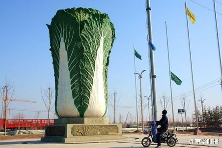
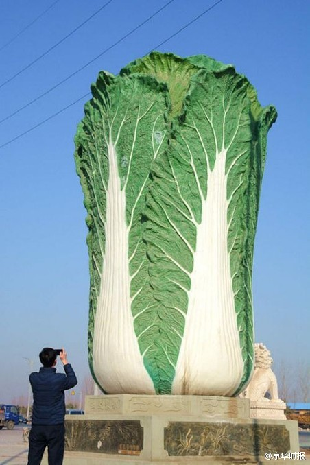
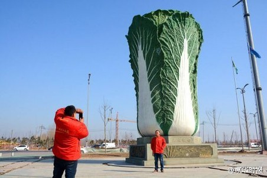

伊利亚斯《文明的进程》讨论为什么人们认为吃饭时直接用手拿吃的不如用叉子文明。有人说这是因为不卫生。但我们可以用手拿蛋糕、面包、巧克力等，而这并不比拿吃的更卫生。作者认为原因是手拿吃的会弄脏手这件事会让人感觉不够文明。这类似于文明的观念包括吃饭弄油了手应尽快拿餐巾擦干净。
白菜好吃！ //@马少平THU:挺精致的 //@黄西Joe_Wong:俺喜欢！边上再有些猪肉和粉条儿就更好了。//@说笑空间:转发微博@长安街知事:【山东现9米高巨型“大白菜”雕塑】2月18日，山东聊城现“巨型大白菜”雕塑，该巨型白菜雕塑高9米宽5米，均为玻璃钢材质，造型逼真、体积庞大。又因白菜谐音“百财”寓意吉利，因此吸引了不少市民参观浏览。By中青网网页链接 